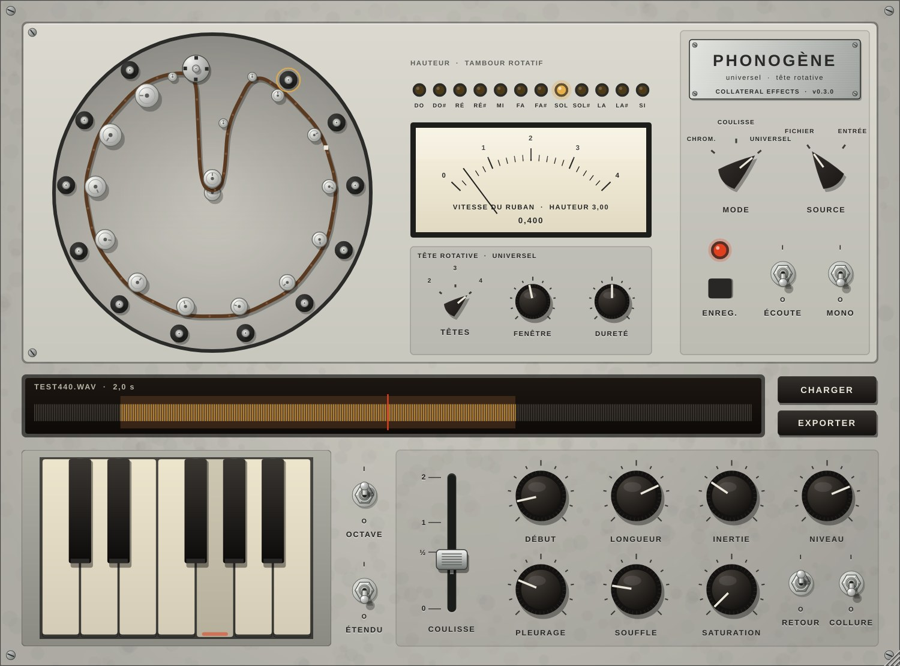
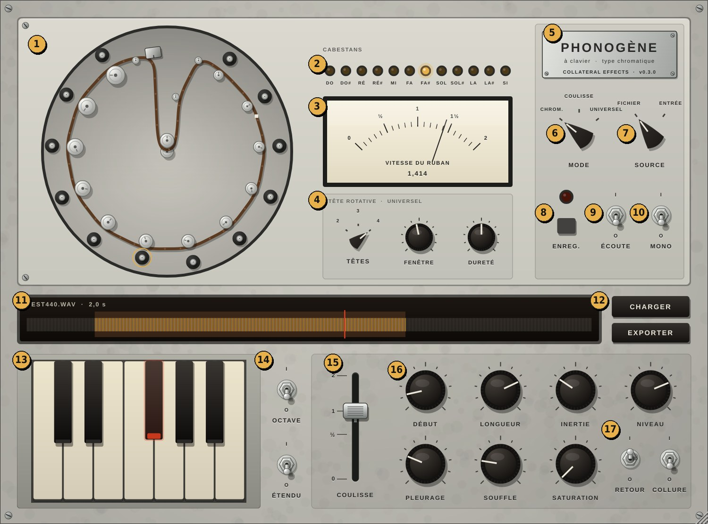
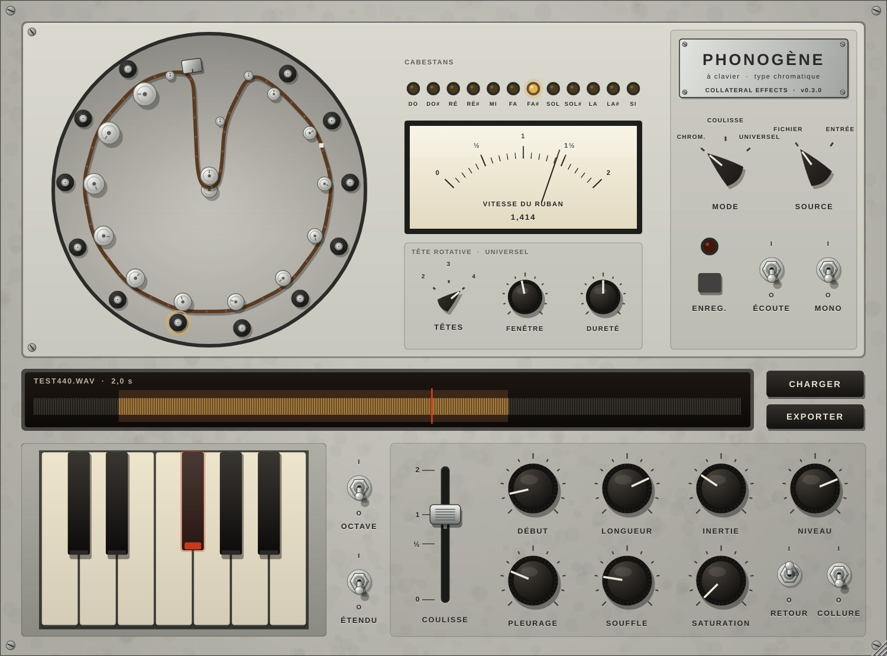
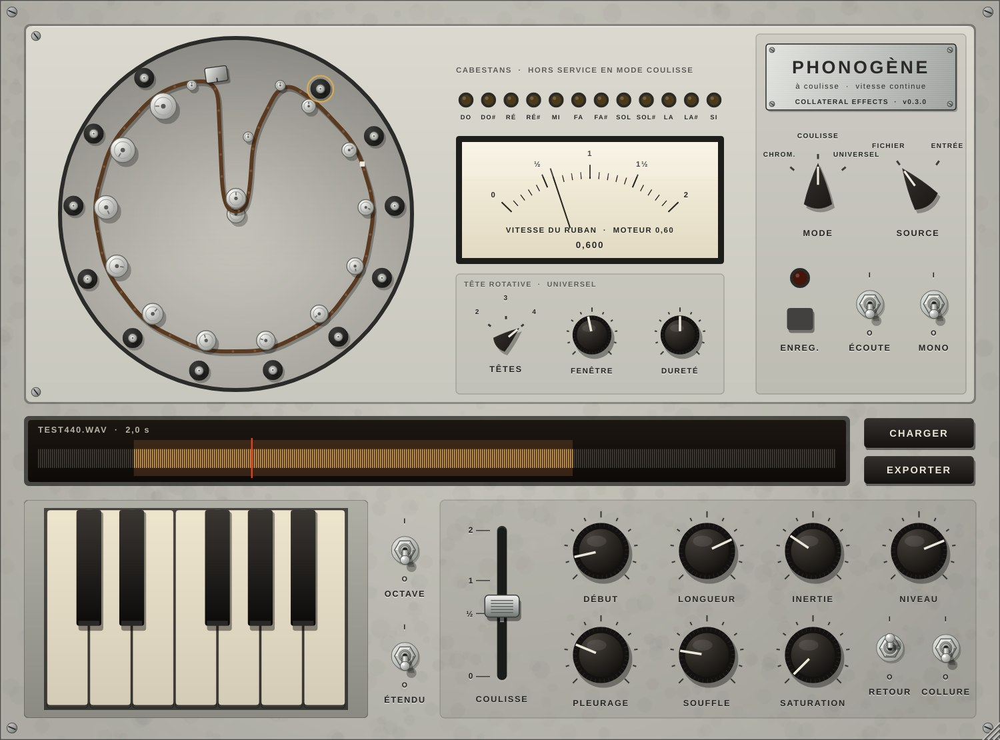

Chromatique, à coulisse, universel. VST3, AU e Standalone per macOS, versione 0.3
{{CAPSTANS}}
Manuale d'uso
Lo strumento a nastro di Pierre Schaeffer e Jacques Poullin, costruito a Parigi negli anni Cinquanta per suonare i suoni registrati: la sua storia, il modo in cui si usava, e come usarne l'emulazione nel proprio studio.
I dodici capstan del Phonogène chromatique: ogni diametro è una velocità del nastro, ogni velocità un semitono.2026
Parte prima
La macchina
1Parigi, 1948–1963: suonare il nastro
Il Phonogène è uno strumento per suonare i suoni registrati. Nasce a Parigi all'inizio degli anni Cinquanta, nello studio di musique concrète della radio francese, da un'idea di Pierre Schaeffer e dal progetto dell'ingegnere Jacques Poullin.
Dalla radio alla musique concrète
Pierre Schaeffer era un ingegnere delle telecomunicazioni e un uomo di radio. Nel 1942 fonda lo Studio d'Essai, un laboratorio per sperimentare con il mezzo radiofonico. Nel 1948, lavorando con giradischi e dischi incisi in studio, compone i Cinq études de bruits: treni, trottole, pentole, un pianoforte. La radio li trasmette il 5 ottobre come «Concert de bruits».
È l'atto di nascita della musique concrète. La musica tradizionale parte da una partitura, astratta, e arriva al suono. Schaeffer fa il percorso opposto: parte da suoni già esistenti, li registra e li elabora direttamente sul supporto, ascoltando a ogni passo il risultato.
Gli strumenti dei primi anni sono quelli di una radio: giradischi a velocità variabile, mixer, filtri, e il solco chiuso, un solco inciso in modo da richiudersi su se stesso e ripetere all'infinito un frammento. Con Pierre Henry, nel 1950, Schaeffer compone la Symphonie pour un homme seul.
Il nastro magnetico e le macchine di Poullin
Nel 1951 nasce il Groupe de Recherche de Musique Concrète (GRMC) e lo studio si attrezza con magnetofoni. Il nastro cambia il modo di lavorare: si taglia con le forbici, si incolla, si legge al contrario. Un anello di nastro fa ciò che faceva il solco chiuso, con molta più libertà.
Per lavorare il nastro servono però macchine che non esistono in commercio, e a progettarle è Jacques Poullin: il magnetofono a tre piste per sovrapporre i suoni, il potentiomètre d'espace per muoverli nello spazio della sala durante i concerti, il morphophone, un anello di nastro letto da più testine che produce echi e ritardi, e il Phonogène, che legge un anello a velocità diverse.
L'oggetto sonoro
Nell'estetica di Schaeffer l'interesse non è riconoscere la fonte di un suono, ma ascoltarlo come oggetto sonoro: per la sua forma, la sua grana, il suo andamento nel tempo. Isolare un frammento in un anello, ripeterlo, trasporlo lungo dodici semitoni o rallentarlo fino quasi a fermarlo sono modi concreti per staccarlo dalla sua origine e farlo diventare materiale musicale. Il Phonogène è la macchina che rende questo gesto rapido e ripetibile, come suonare uno strumento.
Chi lo ha usato
Negli anni Cinquanta passano dallo studio, oltre a Schaeffer e Henry, compositori molto diversi tra loro: Pierre Boulez (Études, 1951–52), Olivier Messiaen (Timbres-durées, 1952), Karlheinz Stockhausen (Konkrete Etüde, 1952), Edgard Varèse, che vi realizza con Henry le parti su nastro di Déserts (1954), e Iannis Xenakis (Diamorphoses, 1957). Uno dei primi esempi noti di Phonogène à coulisse è il lungo glissando del Voile d'Orphée di Pierre Henry (1953).
Dal 1958 il gruppo prende il nome di GRM, Groupe de Recherches Musicales, e accoglie, tra gli altri, François Bayle, Luc Ferrari e Bernard Parmegiani. I loop e la lettura a velocità variabile restano per decenni al centro del lavoro dello studio; la GRM ne porterà lo spirito nel digitale con i GRM Tools.
2Come si lavorava con il Phonogène
Il Phonogène non era uno strumento da palco. Stava nello studio, accanto ai magnetofoni, e il suo suono veniva sempre ri-registrato. Una sessione di lavoro seguiva più o meno questo percorso.
RegistrareIl materiale di partenza, una voce, un pianoforte, un oggetto, un rumore della città, veniva registrato su nastro, in studio o con un'unità mobile.
IsolareL'operatore ascoltava, sceglieva un frammento, lo tagliava e ne univa le estremità con nastro adesivo. Nasceva l'anello, con la sua giunta.
TrasporreL'anello veniva montato sul Phonogène e suonato: dalla tastiera, per avere lo stesso oggetto a dodici altezze, o con la leva, per glissandi e rallentamenti.
Ri-registrareL'uscita del Phonogène andava su un secondo magnetofono. Ogni trasposizione diventava un nuovo pezzo di nastro, catalogato e conservato.
MontareI frammenti trasposti venivano tagliati, incollati e sovrapposti, anche sul magnetofono a tre piste, fino a comporre il brano.
DiffondereIn concerto il nastro finito veniva proiettato nella sala attraverso più altoparlanti, guidando il suono nello spazio.
In questo modo un unico suono diventava uno strumento: una famiglia di trasposizioni dello stesso oggetto, da cui attingere al montaggio come da una tastiera. È anche il motivo per cui il Phonogène è monofonico: serviva a produrre materiale, una nota alla volta, non a suonare accordi. Gli accordi e le polifonie nascevano dopo, sovrapponendo i nastri.
Il plugin riproduce soprattutto il terzo passaggio, ma porta con sé anche il primo e il secondo: si può registrare direttamente dall'ingresso, scegliere il frammento e chiudere l'anello, con la giunta udibile se lo si desidera. Ri-registrare, montare e diffondere sono il lavoro che oggi si fa nel DAW.
3Le tre macchine
Il principio è lo stesso di qualsiasi magnetofono: un nastro letto più velocemente suona più acuto e più breve, letto più lentamente suona più grave e più lungo. Il Phonogène trasforma questo fatto fisico in un gesto musicale. Ne esistettero tre versioni.
Chromatique
À coulisse
Universel
Come si suona
Tastiera di un'ottava: ogni tasto innesta uno dei dodici capstan
Una leva varia la velocità del motore, in modo continuo
Tastiera e leva, con un tamburo di testine rotanti al posto della testina fissa
Altezza e durata
Legate: più acuto vuol dire più breve
Legate, ma variano senza scalini
Indipendenti
Uso tipico
Melodie e scale ricavate da un rumore; famiglie di trasposizioni
Glissandi, cadute, rallentamenti fino all'arresto
Trasporre senza accorciare; allungare o congelare un suono senza cambiarne l'altezza
Costruzione
Ditta Tolana, 1953
Prototipi con la ditta SAREG
Anni Sessanta, le fonti indicano il 1963
Il Phonogène chromatique
Un anello di nastro passava davanti a un'unica testina di lettura e poteva essere trascinato da dodici capstan di diametri diversi. Una piccola tastiera di un'ottava sceglieva quale capstan, attraverso il proprio rullo pressore, trascinasse il nastro: ogni tasto una velocità, ogni velocità un semitono della scala temperata. Con un solo nastro e una sola testina la macchina era monofonica e adatta soprattutto a suoni brevi. Secondo la GRM trasponeva «sur une à deux octaves».
Il Phonogène à coulisse
Detto anche a variazione continua: una leva agiva direttamente sulla velocità del motore, che poteva scendere quasi fino all'arresto passando per tutte le velocità intermedie, senza legarsi alla scala temperata. Era lo strumento dei glissandi e delle cadute di velocità, con tutta l'inerzia di un motore e del suo volano.
Il Phonogène universel
Arrivato più tardi, sostituisce la testina fissa con una testina rotante: più testine montate su un tamburo leggono a turno il nastro, ciascuna per un breve segmento. Se il tamburo gira, la velocità relativa tra testina e nastro decide l'altezza; la velocità del nastro decide la durata. Così altezza e durata diventano indipendenti: si può trasporre un suono senza accorciarlo, o allungarlo senza renderlo più grave. È un'anticipazione meccanica del time-stretching digitale, con un suono proprio: le giunture tra un segmento e l'altro danno una grana leggera, a volte un ronzio.

Il plugin in modo universel: al posto della testina fissa compare il tamburo rotante, e il pannello TÊTE ROTATIVE si attiva.
Parte seconda
Il plugin
4Installazione e primi passi
Il Phonogene di Collateral Effects è uno strumento per macOS in tre formati: VST3 per Ableton Live, AU per Logic Pro e un'applicazione Standalone che funziona senza DAW.
Installazione su macOS
Copia Phonogene.vst3 in /Library/Audio/Plug-Ins/VST3, Phonogene.component in /Library/Audio/Plug-Ins/Components e Phonogene.app in /Applications.
Il plugin non è firmato da uno sviluppatore Apple. Dal Terminale rimuovi la quarantena:
A ogni aggiornamento sostituisci tutti e tre i file. La versione installata è scritta sulla targhetta del pannello: se non corrisponde a quella scaricata, stai usando una copia vecchia.
In Ableton Live
Il Phonogene va inserito su una traccia MIDI. Per suonare un file basta caricarlo. Per registrare dal vivo serve il sidechain:
Crea una traccia audio con l'ingresso della scheda audio, o con una clip da usare come sorgente.
Nel dispositivo Phonogene apri il menu Sidechain e scegli quella traccia in Audio From.
Porta SOURCE su ENTRÉE, premi ENREG., suona la sorgente e ripremi ENREG.: l'anello è pronto.
Suona dalla tastiera del controller, nell'ottava di C3, o da quella a schermo con il mouse.
Nella versione Standalone l'ingresso è quello della scheda audio, scelto nelle impostazioni audio dell'applicazione.
In trenta secondi
Trascina un file WAV o AIFF sul plugin e premi i tasti: ogni tasto è un capstan, ogni capstan un semitono. Gira DÉBUT e LONGUEUR per scegliere il frammento. Poi porta MODE su coulisse e muovi la leva; infine su universel, e abbassa la leva fino quasi a fermare il nastro.
5L'interfaccia
Il pannello riproduce l'aspetto di una macchina da laboratorio degli anni Cinquanta. I nomi dei comandi sono in francese, come sugli strumenti dello studio; passando con il mouse su qualsiasi comando compare un riquadro con il nome e la funzione in italiano.

Il pannello completo. I numeri corrispondono alla tabella che segue.
N.
Elemento
Funzione
1
Pozzetto
La meccanica: anello di nastro, dodici capstan con i rulli pressori, testina o tamburo, perno tenditore.
2
CABESTANS
Le spie indicano il capstan innestato (chromatique) o l'altezza suonata (universel).
3
Tachimetro
Velocità reale del nastro; in coulisse anche quella del motore, in universel l'altezza.
4
TÊTE ROTATIVE
TÊTES, FENÊTRE, DURETÉ: i comandi del tamburo, attivi in universel.
5
Targhetta
Nome della macchina scelta con MODE e versione del plugin.
6
MODE
Chromatique, à coulisse, universel.
7
SOURCE
FICHIER, un file caricato, o ENTRÉE, il nastro registrato dall'ingresso.
8
ENREG.
Registra l'ingresso sull'anello; la spia rossa è accesa durante la registrazione.
9
ÉCOUTE
Manda in uscita anche il segnale in ingresso, per sentire cosa si registra.
10
MONO
Nastro a una traccia, come l'originale.
11
Finestra del nastro
Forma d'onda, regione dell'anello in ambra, punto di lettura in rosso.
12
CHARGER, EXPORTER
Carica un file come nastro; esporta la registrazione in WAV o AIFF.
13
Tastiera
Un'ottava, da DO a SI; si suona anche con il mouse.
14
OCTAVE, ÉTENDU
Ottava superiore della tastiera; tastiera estesa a tutte le ottave del controller.
15
COULISSE
La leva: velocità continua in coulisse, durata in universel.
Manopole e leva: trascina in verticale o in orizzontale. I selettori MODE, SOURCE e TÊTES cambiano posizione con un clic o con un breve trascinamento.
Interruttori: un clic scatta tra O (spento) e I (acceso).
Passaggio del mouse: mostra il riquadro informativo.
Ctrl+clic riassegna il controllo MIDI del comando; il tasto destro apre il menu MIDI (capitolo 11).
Finestra: si ridimensiona dall'angolo in basso a destra mantenendo le proporzioni; si apre sempre a 1000 × 740 punti.
6Il nastro: sorgente, anello, registrazione
Come sulla macchina originale, si lavora su un anello di nastro: un frammento che si ripete. Il commutatore SOURCE sceglie da dove viene il nastro.
SOURCE · FICHIER
Il nastro è un file audio (WAV, AIFF, FLAC e gli altri formati supportati da macOS), lungo fino a 120 secondi. Si carica con CHARGER o trascinandolo sul plugin; durante il caricamento la finestra del nastro mostra «CHARGEMENT…». Il percorso del file è salvato nel progetto e il file viene ricaricato alla riapertura.
SOURCE · ENTRÉE
Il nastro è registrato dall'ingresso: il sidechain in Live, la scheda audio nello Standalone. ENREG. avvia e ferma la registrazione, fino a 30 secondi; mentre registra, il nastro si può già suonare. ÉCOUTE fa sentire l'ingresso in uscita. La registrazione è salvata nel progetto, senza perdita di qualità, e EXPORTER la salva come file WAV o AIFF a 24 bit, da usare altrove.
DÉBUT e LONGUEUR
Scelgono quale parte del nastro forma l'anello: DÉBUT è il punto di inizio, LONGUEUR la durata, da mezzo per cento a tutto il nastro. La regione appare in ambra nella finestra del nastro. Anelli corti producono ripetizioni ritmiche e, alle velocità alte, ronzii e timbri nuovi; anelli lunghi lasciano riconoscere il materiale. Si possono girare mentre il nastro suona: il passaggio alla nuova regione è morbido, senza clic.
COLLURE
Sulla macchina l'anello era chiuso con una giunta di nastro adesivo. Con COLLURE su I la giunta passa sulla testina a ogni giro: un breve calo di livello nel punto di chiusura, che si allunga quando il nastro rallenta. È il segno ritmico tipico dei loop di musique concrète, da attivare quando serve.
MONO
Il Phonogène leggeva un nastro a una sola traccia: il suono era monofonico. Con MONO su I i due canali vengono sommati e le due uscite ricevono lo stesso segnale. Su O il plugin conserva lo stereo del materiale.
7Modo chromatique

FA# premuto: il rullo del capstan FA# è innestato, la spia si accende e il nastro scorre a 1,414 volte la velocità nominale.
Ogni tasto innesta il rullo pressore di un capstan, e il diametro del capstan decide la velocità del nastro secondo la scala temperata. Il DO corrisponde alla velocità nominale, il SI a quasi il doppio. Lasciato il tasto, il rullo si stacca e il nastro rallenta fino a fermarsi: il suono scende e svanisce in modo naturale.
Una nota alla volta. Un solo nastro, una sola testina. Premendo un secondo tasto senza staccare il primo, il nastro scivola alla nuova velocità, in legato.
RETOUR su I fa ripartire il nastro dall'inizio dell'anello a ogni nuovo attacco, come un campionatore. Su O il nastro riprende da dove si era fermato, come una bobina vera.
OCTAVE porta la tastiera all'ottava superiore, con velocità doppia; il tachimetro passa alla scala da 0 a 4.
ÉTENDU su O fa ricadere tutte le ottave del controller nell'unica ottava della macchina. Su I ogni tasto ha la sua velocità: C3 nominale, C4 doppia, C2 metà.
INERTIE è il tempo che il nastro impiega a raggiungere la nuova velocità. Valori bassi danno attacchi secchi; valori alti partenze e arresti in glissando. Sulla macchina reale l'innesto era probabilmente sotto i 300 ms: oltre è un uso espressivo.
8Modo à coulisse

La leva a 0,6: il nastro, trascinato dal primo capstan, scorre al 60% della velocità nominale.
Qui la velocità è continua. La leva COULISSE regola il motore da quasi fermo fino a due volte la velocità nominale; il pitch bend la sposta ancora, di un'ottava in su o in giù, e la mod wheel muove la leva dal controller.
I tasti non scelgono l'altezza. Qualsiasi tasto innesta il nastro, che si stacca al rilascio. ÉTENDU qui non ha effetto e appare attenuato.
INERTIE diventa la massa del motore con il suo volano: la velocità insegue la leva con un ritardo tre volte maggiore, fino a tre secondi. Leva veloce e inerzia alta danno glissandi lunghi e morbidi.
Verso l'arresto il suono cambia come su un vero magnetofono: il livello cala, i bassi spariscono, aumentano tremolio e deriva, compare un leggero rombo del motore che cresce con SOUFFLE.
Un gesto da provare
Tieni premuto un tasto, porta la leva a 1, poi falla scendere lentamente fino in fondo: il suono si abbassa, si sgrana e si spegne nel rombo del motore, come un nastro trattenuto con un dito.
9Modo universel
Il tamburo con le testine rotanti separa le due grandezze che il nastro lega insieme:
la tastiera, con OCTAVE, ÉTENDU e il pitch bend, decide l'altezza;
la leva COULISSE decide la velocità del nastro, cioè la durata: a 2 il frammento scorre il doppio più in fretta senza cambiare altezza; vicino a 0 il nastro quasi si ferma e il suono resta sospeso;
INERTIE fa scivolare sia l'altezza tra una nota e l'altra sia la velocità del nastro.
I comandi del tamburo
Comando
Che cosa fa
Come si sente
TÊTES2 · 3 · 4
Numero di testine sul tamburo; il nastro ne avvolge una alla volta.
Cambia la frequenza delle giunture tra un segmento e l'altro.
FENÊTRE10–250 ms
Lunghezza del segmento letto da ogni testina, cioè la distanza tra due testine misurata sul nastro. Predefinita a 40 ms, come nel regolatore di Springer.
Corta: suono granuloso, ronzante. Lunga: più liscio, con ripetizioni udibili.
DURETÉ0–1
Durata del passaggio tra una testina e la successiva.
A 0 le testine si sfumano l'una nell'altra, morbido. A 1 commutazione secca, con i clic di raccordo tipici della macchina.
Su un suono puro il salto tra le testine si sente come un leggero battimento, e l'altezza può scostarsi di poco: è il carattere delle testine rotanti. Quando FENÊTRE contiene un numero intero di periodi del suono, l'altezza torna esatta. FENÊTRE e DURETÉ si possono muovere mentre si suona; muovendo FENÊTRE in fretta si sente un breve glissando, perché il tratto di nastro tra le testine cambia lunghezza.
10Il carattere del nastro
Quattro manopole danno al suono le imperfezioni di una macchina vera. Agiscono in tutte e tre le modalità.
Manopola
Che cosa fa
PLEURAGE
Le piccole oscillazioni di velocità del trasporto: il pleurage lento, il tremolio rapido e una lenta deriva. Nascono dalla rotazione delle parti meccaniche: in coulisse e in universel seguono il motore e rallentano con lui. A 0 il trasporto è perfetto.
SOUFFLE
Il soffio del nastro, presente solo quando il nastro scorre. È inciso sul nastro, quindi si traspone con la lettura: più grave quando il nastro rallenta, più acuto quando accelera.
SATURATION
Saturazione morbida della testina, che arrotonda i picchi e dà densità.
NIVEAU
Livello d'uscita, da −36 a +12 dB.
Anche senza queste manopole la lettura ha il colore di una testina d'epoca, con estremi gravi e acuti un po' attenuati. Alle velocità alte il suono resta pulito: il plugin evita i fischi metallici che una trasposizione digitale ingenua produrrebbe.
Che cosa mostrano gli indicatori
Pozzetto: il nastro scorre alla velocità reale; i capstan girano sempre; il rullo innestato è cerchiato d'ambra; in universel il tamburo gira alla velocità relativa tra testina e nastro.
SpieCABESTANS: il capstan innestato in chromatique, l'altezza in universel; spente in coulisse.
Tachimetro: velocità del nastro da 0 a 2, o da 0 a 4 con OCTAVE. Sotto la scala, la velocità del motore in coulisse e l'altezza in universel.
11MIDI e controller
La tastiera della macchina corrisponde all'ottava di C3 del controller, le note da DO a SI secondo la convenzione di Live e Logic. Con ÉTENDU su O anche le altre ottave suonano, ricadendo nell'unica ottava della macchina. Il pitch bend agisce in coulisse e in universel.
Controlli predefiniti
Le manopole partono dal CC 74, la leva dalla mod wheel. Tutto si può riassegnare.
Comando
CC
Comando
CC
Comando
CC
DÉBUT
74
SATURATION
80
MODE
27
LONGUEUR
75
TÊTES
81
SOURCE
28
INERTIE
76
FENÊTRE
82
ENREG.
29
NIVEAU
77
DURETÉ
83
ÉCOUTE
30
PLEURAGE
78
COULISSE
1
RETOUR
31
SOUFFLE
79
OCTAVE
15
ÉTENDU
14
MONO
16
COLLURE
17
Riassegnare un controllo
Ctrl+clic sul comando: il comando lampeggia in ambra. Muovi la manopola o il cursore del controller che vuoi usare e l'assegnazione è fatta. Un secondo ctrl+clic annulla.
Tasto destro sul comando: il menu mostra il CC attuale e permette di sceglierne uno direttamente da Assegna CC, dove i numeri già usati riportano il comando a cui appartengono. Dallo stesso menu: Rimuovi il CC e Ripristina i CC predefiniti.
Se il CC scelto era già usato da un altro comando, viene tolto da lì: ogni CC muove un solo comando.
Interruttori e selettori: un valore da 64 in su vale I; i selettori dividono l'escursione del CC tra le loro posizioni.
Le assegnazioni sono salvate nel progetto, e i movimenti arrivano al DAW come automazione.
12Ricette di musique concrète
Cinque punti di partenza, ciascuno legato a un uso storico della macchina.
Melodia di un oggetto
Registra un colpo su un oggetto metallico. Modo chromatique, RETOUR su I, LONGUEUR breve, INERTIE tra 20 e 40 ms. Suona una melodia: il timbro dell'oggetto cambia a ogni altezza.
Étude aux chemins de fer
Un loop ritmico, passi, una macchina, un treno, in modo chromatique con RETOUR su O: cambiando tasto il ritmo accelera e rallenta insieme all'altezza, come nei primi studi di Schaeffer.
La caduta di Orfeo
Una voce lunga in modo à coulisse, INERTIE alta, leva da 1 a 0 in alcuni secondi, PLEURAGE e SOUFFLE a metà: un glissando discendente che si spegne nel rombo.
Accordo congelato
Una nota di pianoforte in modo universel, leva quasi a 0, FENÊTRE tra 80 e 120 ms, DURETÉ bassa: il suono resta sospeso e si può cambiarne l'altezza dalla tastiera senza farlo ripartire. Registra più note su tracce diverse del DAW per costruire l'accordo, come si faceva sovrapponendo i nastri.
Grana meccanica
Modo universel, TÊTES su 2, DURETÉ alta, FENÊTRE tra 15 e 30 ms: le giunture tra le testine diventano un ronzio ritmico, la firma sonora del tamburo rotante.
Lavorare come allo studio
Registra l'uscita del Phonogene su una traccia audio del DAW, una trasposizione alla volta, e dai un nome a ogni clip. Avrai la tua famiglia di oggetti sonori, pronta per il montaggio.
ATabella dei comandi
Comando
Valori
Predefinito
Dove agisce
MODE
Chromatique, à coulisse, universel
Chromatique
SOURCE
Fichier, entrée
Fichier
Tutti i modi
ENREG.
O, I
O
Con SOURCE su entrée
ÉCOUTE
O, I
O
Tutti i modi
RETOUR
O, I
I
Tutti i modi
ÉTENDU
O, I
O
Chromatique, universel
OCTAVE
O, I
O
Chromatique, universel
MONO
O, I
O
Tutti i modi
COLLURE
O, I
O
Tutti i modi
DÉBUT
0,00 – 1,00
0,00
Tutti i modi
LONGUEUR
0,005 – 1,00
1,00
Tutti i modi
INERTIE
2 – 2000 ms
35 ms
Tutti i modi
NIVEAU
−36 – +12 dB
0 dB
Tutti i modi
PLEURAGE
0,00 – 1,00
0,25
Tutti i modi
SOUFFLE
0,00 – 1,00
0,20
Tutti i modi
SATURATION
0,00 – 1,00
0,20
Tutti i modi
COULISSE
0,02 – 2,00
1,00
Coulisse (velocità), universel (durata)
TÊTES
2, 3, 4
4
Universel
FENÊTRE
10 – 250 ms
40 ms
Universel
DURETÉ
0,00 – 1,00
0,50
Universel
Pitch bend
±12 semitoni
Coulisse, universel
Limiti
Monofonico in tutte le modalità, come la macchina originale: suona l'ultima nota premuta.
Registrazione dall'ingresso fino a 30 secondi; file fino a 120 secondi.
Trasposizioni pulite fino a quattro volte la velocità nominale; oltre, il suono si fa più aspro.
La versione AU per Logic Pro non è ancora stata verificata.
DAFx 2025, paper 70, sulle macchine a nastro di Poullin e i loro costruttori.
D. Teruggi, «De phonogène en phonogène», 2001; O. Julien, intervista a François Bayle, Canadian University Music Review, 2004.
Phonogene è un plugin di Collateral Effects. Phonogène, GRM e i nomi citati appartengono ai rispettivi titolari e sono usati solo per descrivere la storia della macchina.